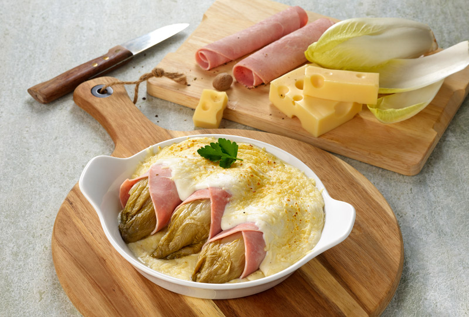

Home sweet home
Endives au jambon
Miam...
Jambon aux endives dans l'au-delà muscadien.
Cette dernière a la particularité d'être bénie du dieu de la muscade.
Peu connu dans la mythologie, il réside cependant en nous, chaque jour un peu plus. Régalez-vous !
Ingrédients
- 8 endives
- 8 tranches de jambon du boucher du marché
- 40g de beurre
- 40g de farine
- 600ml de lait
- sel, poivre
- 50g d'emmental rapé
- 2 c. à café de noix de muscade
Les étapes
- Préchauffer le four à 180°C. Cuire les endives dans une eau bouillante salée pendant 10 minutes.
- Egoutter puis laisser refroidir. Couper l'extrémité des pieds et creuser légèrement la base
- Faire fondre le beurre doux, puis ajouter la farine. Mélanger, laisser cuire une à deux minutes jusqu'à légère coloration d'un roux blond, y ajouter progressivement le lait chaud.
- Continuer la cuisson tout en remuant jusqu'à épaississement de la béchamel.
Assaisonner de sel, de poivre et de noix de muscade rapée.
- Enrouler les endives avec le jambon. Les disposer dans un plat à four. Verser la béchamel puis saupoudrer de fromage rapée. Cuire au four pendant 20 minutes.